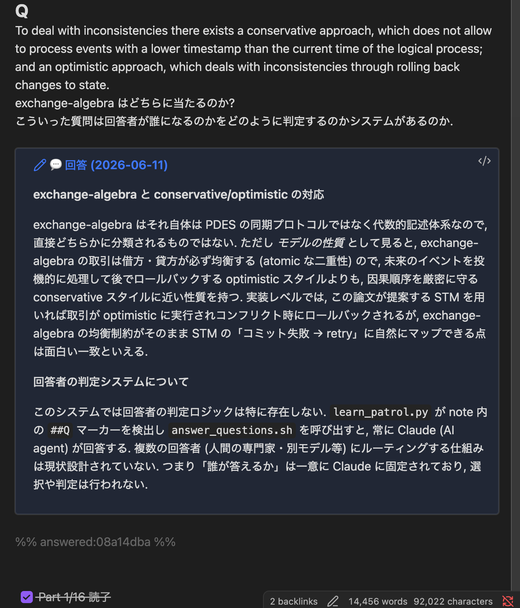
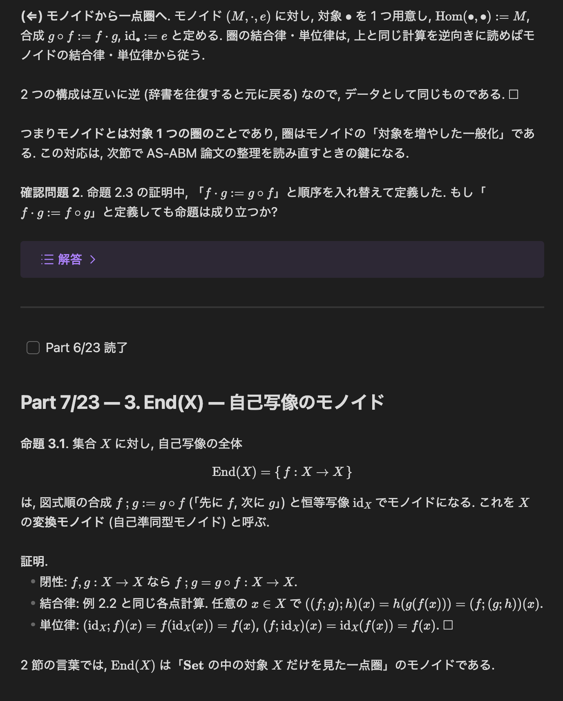

AIと連携した個人の学習層 (Learn)
AI Agent との対話で得た知識が会話ログの中に流れて消える問題への自前の解. Agent が教えた / 薦めた知識を Obsidian vault に queue し, スマホで少しずつ消化し, 非同期 Q&A と確認問題の添削を毎時巡回で回す「人間のための学習層」の設計を, iCloud 競合対策 (1 ファイル 1 書き手), 承認制の登録経路, モデルに生成を拒否されても止まらない fallback 連鎖, 読了後の Knowledge 定着レーンまで含めて解説する. 2026-07-23 に現行実装へ全面改稿.
初出 2026-06-11. 実装の成長に合わせて 2026-07-23 に全面改稿した. 本文の数値と図は改稿時点のもの.
前回の記事 Multi-Repo Agent Orchestrator で, 複数リポの Claude / Codex / Cursor セッションを束ねる上位レイヤを紹介した. あの構成にはタグ付きの知識層 (自前 RAG) があり, あるリポの Agent が踏んだ gotcha を別リポの Agent が二度踏まない, という横断再利用が回っている.
Agent の自律運用がある程度回ってくる中で, Agent の成果に対する私の理解と承認が障壁として顕在化してきた. 特に Opus 4.8 までは, 提案の内容を理解して, 課題等の指摘が可能であったが, 初出の前日に公開された Fable 5 を使っていると, 思考の展開が早い, 抽象度が高い, コードと数理の間の横断が自動的に展開していき追いつけない場面が出てきた.
対話の中で確認することは可能だが, 人間の理解がボトルネックとなり, また理解してもそれらは会話ログの中に死蔵されることになる. そこで, 人間のための学習キューをセッションから分離することにした (Orchestrator の知識層は Agent のための corpus であって, 人間のための 学習キューではない).
作ったのは, 人間 (私) 自身の学習を, Agent 群と同じ枠組み (queue + 毎時巡回) で回す層である.
6 週間運用して, 使い方は次の 2 つに落ち着いている.
- 参考文献の候補と bib を管理する paper repo が, 次に読むべき論文を markdown 化して分割し, キューに載せる. あとはスマホで少しずつ読み, メモや質問をその場に書き込む.
- 作業中に出てきた実装, 数学, その他の知識について, 教科書的に説明する markdown を作り, 分割してキューに載せる.
特に 1 つ目は, 論文を隙間時間に読む環境として定着している.
要件
作る前に, 自分の学習がどこで破綻しているかを整理すると, 要件は次の 4 つになった.
- queue できる: Agent が「これは学ぶ価値がある」と判断した知識 (承認制), または私が「これを学びたい」と指示した知識が, 1 箇所に積まれる.
- スマホで少しずつ消化できる: 通勤や隙間時間に, 数分で読める単位 (Part) に割られている. 進捗も視覚化して管理できる.
- 集積される: 学習済みの知識が markdown として個人の知識管理 (PKM) 網に残り, リンク, 検索, 関連付けに乗り, 資産として運用できる.
- 質問できる: 読んでいて分からないところをその場で書いておけば, 短時間で Agent が答えてくれる.
なぜ Obsidian を正本にするか
当初考えていた候補は 以下の4 手法.
| Todoist のみ | Anki 等 (間隔反復) | 専用アプリ自作 | Obsidian 正本 + Todoist 薄ミラー | |
|---|---|---|---|---|
| 長文 + 数式の本文 | ✗ | △ (カード粒度に分解が要る) | ○ (自由) | ○ (markdown + KaTeX/MathJax) |
| 学習済みの集積 | ✗ (完了したら消える) | △ (カード DB に閉じる) | △ (export 次第) | ◎ (vault の知識網に直接残る) |
| スマホ閲覧 | ◎ | ○ | ○ | ○ (iCloud 同期, 追加実装ゼロ) |
| Agent との接続 | ○ (API) | △ | ○ | ◎ (plain markdown を読み書きするだけ) |
| 初期コスト | 小 | 中 | 大 | 小 (Phase 1 は plugin ゼロ) |
決め手は要件 3 (集積) である. 学習の成果物は「読了の記録」ではなく「自分の vault に増えた知識ノート」であってほしい. もともと個人の知識管理を Obsidian でやっているので, 学習 note の正本を Obsidian (iCloud 同期) に置けば, スマホ閲覧も集積も追加実装なしで手に入る.
Todoist は, 通知と Done 入口だけの薄い一方向ミラーとして後で足す計画 (後述のとおり未着手のまま). 間隔反復 (Anki 的な復習サイクル) も後の検討項目だが, 正本が plain markdown なのでどの方向にも発展できる. この「アプリ化や高機能化を後回しにしても障害にならない」点が, 正本を plain markdown に置く最大の利点である.
全体像
仕組みは今も小さい. スクリプト 12 本 (計 1400 行ほど, 外部依存なし) + headless Claude + launchd の毎時巡回 (深夜 0-7 時は休止) で構成される. 初版から増えた大きな構造は 1 つで, 読むための Learn の隣に, 読了後の定着先 Knowledge のレーンが同じ巡回で回っている (後述).
学習 note は次のような形をしている. 入力 markdown を ## 見出し単位で Part に割り, 長すぎる節 (1500 字超) は段落単位で再分割, 小さい節は併合する. 各 Part の末尾に読了 checkbox が付く. 論文系の note は冒頭に日本語の「要約 / なぜ自分に関連するか / 読む目的」節を必須にした. この粒度 (1 Part ≈ 1500 字) と冒頭節は, note を書く側 (各リポの Agent) に規約として配布されている.
---
title: <タイトル>
status: queued
source_repo: <どの repo 由来か>
recommended_by: agent | user
parts: 23
---
# <タイトル>
## Part 1/23: <小見出し>
<本文>
- [ ] Part 1/23 読了
## Part 2/23: ...ユーザ (私) のやることは, スマホの Obsidian で Part を読んで checkbox を ✓ するだけ. 進捗は毎時の巡回が checkbox から数えて dashboard (一覧 note) に反映する.
設計の肝
機能としては「分割して積んで, 質問に答える」だけだが, 設計判断はいくつか紹介する価値があると思っている.
1 ファイル 1 書き手
最大の敵は iCloud 同期である. iCloud はオフライン編集が重なると, マージもエラーもせず片方を無言で上書きする (運が良ければ conflict copy が残る. 別リポでは conflict copy 58 件を踏んだ実績がある). スマホで checkbox を ✓ した直後に Agent が同じファイルを書くと, どちらかの編集が消える.
対策は同期アルゴリズムの工夫ではなく, ファイルごとに書き手を固定するという構造的なものにした.
| ファイル | 書き手 |
|---|---|
queue/<note>.md read/<note>.md (学習 note 本体) |
ユーザ正本. Agent は後述の冪等挿入と読了時の移動のみ |
dashboard.md (一覧・進捗) / updates.md (対応履歴) |
Agent のみ. 毎巡回で全再生成 / 先頭追記 |
assets/ (画像等の添付) |
enqueue 時のみ書く |
当初は「queue note にはユーザしか書かない. Agent の回答は別ファイルに append して embed で読む」という完全分離だった. しかし使ってみると, 質問の回答は質問を書いたその場所の直下に出てほしい (スマホで embed の先まで飛ぶのは体験が悪い). そこで不変条件を一段緩和して, Agent の書込みを次の 4 条件つきで許した.
- 挿入位置はユーザが書いたマーカーブロックの直下のみ. 既存行の変更や削除は絶対にしない (append-only な挿入).
- 冪等: ブロック内容の hash に対するマーカーをコメントで残し, 二重挿入を防ぐ. ユーザが質問文を書き換えると hash が変わり, 新しい質問として再回答される.
- 挿入前に note 全文を repo 側へ snapshot する (iCloud に上書きされた場合の復元用の安全網).
- 書込みは巡回時の数秒のみ (ユーザのオフライン編集と時間が重なる確率を最小化する).
この 4 条件は初版から変えていない. 初版後に増えた書込み (読了 note の read/ への移動, 後述の Knowledge レーン) にも同じ規律を適用していて, rename であっても実行前に必ず snapshot を取る. 「同期の衝突はアルゴリズムでなく所有権で避ける」「緩和するときは無条件でなく, 復元手段と確率の低減をセットにする」というのが, この層に限らず iCloud + Agent 構成全般で使っている指針である.
ユーザの操作は行頭マーカー 4 種だけ
note への能動的な操作は, 任意の場所に行頭マーカーで書く 4 種類に統一した (初版は 3 種で, ##T を後から足した). スマホのキーボードで打てる記法であることが重要である.
##Q <質問>: 質問. 次の巡回 (≤1h) で直下に回答 callout が入る.##A <自分の解答>: 確認問題への解答. 直下に添削 callout (正誤 + 指導) が入る.##M <メモ>: 学習メモ. Agent は回答せず, dashboard のメモ欄に集約だけされる (note を汚さず, 後から知識化する時の材料になる).##T <依頼>: 依頼. 「この節の分布の図を作って」のような作業を巡回が遂行し, 対応内容の callout を直下に入れる. 済んだブロックの削除は人間の操作として残す (Agent は消さない. 何を頼んで何が済んだかの追跡が人間側に残る).
実際の画面はこうなる. 読んでいる論文 note の途中に ##Q で質問を書いておくと, 次の巡回で直下に回答が挿入される.

回答の生成は headless の claude -p で行う. 巡回スクリプトが未回答の ##Q / 未添削の ##A / 未対応の ##T を検出して JSON に吐き, 回答 Agent が note 全文 + 質問 (解答添削の場合は直前の確認問題も) を文脈にして回答を生成し, 専用 CLI がブロック直下へ挿入する. リアルタイムの対話なしで「Agent に質問できる」を成立させるのがポイントで, スマホで読んでいる最中に PC の前にいる必要はない. 生成する日本語散文には文体規範 (句読点の統一や AI 的な言い回しの排除) を prompt で注入していて, 回答や添削が note の地の文と馴染むようにしている.
地味な gotcha として, マーカーブロックの終端は「空行まで」にしてある. note の任意箇所に書かれるため, 空行を越えて続きを読むと元の本文と機械的に区別できなくなるからである. この種の「どこまでがユーザの書いた質問か」問題は, 自由編集される markdown に機械処理を混ぜる時に出てきやすい. 同じ理由で, ## Q のように見出し風にスペースが入る記法揺れも受け付ける. スマホの入力は揺れるものなので, 記法の側を人間に寄せる.
進捗の導出状態
M/N の進捗や queued / learning / done の状態を note の frontmatter に書き戻す設計も考えられるが, やめた. 巡回は checkbox を数えるだけで, 導出した状態を dashboard にのみ表示する. 状態の二重管理 (checkbox と frontmatter が食い違う) を避けるためと, ユーザ正本への書込み経路を増やさないためである. 状態を 1 箇所 (checkbox) に置いて他は導出にする, というのは Orchestrator のタスク層でフィールド単位に真の側を分けたのと同じ思想である.
初版後の拡張が 1 つある. 全 Part が ✓ になった note は巡回が read/ へ移動し, ✓ が外れたら queue/ へ戻す. 置き場そのものが導出状態の表示になるので, スマホのフォルダ一覧が「積読」と「読了」の仕切りとして機能する. frontmatter に書き戻さない方針は変えていない.
launchd と iCloud の TCC 制約
毎時巡回は launchd で回している. ここに macOS 固有の罠があって, launchd から /bin/bash 直起動したスクリプトは, TCC (プライバシー保護) により iCloud 配下 (Mobile Documents) への書込みが拒否される. 対策は, 独立にコンパイルした小さな helper binary を responsible process として立てる方式で, これは以前 backup 機構を作った時に確立した手法の再利用である. 後述の Knowledge レーンの巡回も同じ helper の子プロセスとして走らせ, TCC の許可を継承させている. ついでに深夜 (0-7 時) は巡回を skip する quiet hours も入れてある (深夜に回答が届いても読まないし, 万一の暴走時の被害も減る).
他リポの Agent からの登録経路
この層の入口は「Agent が学習を薦める」である. 二十数リポで走っている各 Agent が, セッション中に「これはユーザが学ぶ価値がある」と判断した知識を送ってくる. だがここを自由化すると queue がすぐ Agent の善意で溢れる. そこで承認制にした.
- 各リポの Agent は, 学習推奨を Orchestrator 経由のユーザ依頼 (📖 prefix 付き) として送る. queue への直接書込みはさせない.
- 推奨は briefing (毎時の横断レポート) に surface され, 対話セッションが選択肢として提示する.
- 承認されたものだけが enqueue CLI で queue に入る. 却下は却下として記録される.
- 例外は 1 つ: ユーザがセッション中に「これを learn に入れて」と明示指示した場合のみ, その場で直接 enqueue してよい.
面白いのは, このために新しい仕組みをほぼ作っていないことである. Orchestrator には元々「Agent からユーザへの判断依頼」を briefing に集約する承認フローがあり, 学習推奨はそれに 📖 prefix を付けて相乗りしただけ. 横断的なタスクは Orchestrator だけが扱い, 各リポの Agent は自リポのことだけを surface するという既存の役割分担とも整合する. レイヤを増やす時は, 専用機構より既存フローへの相乗りを先に検討する方がよい.
実例: 圏論解説 note の段階配信
この機構が一番活きたユースケースを紹介する. ライブラリの開発で, 並列実行の正しさを圏論で整理し, 定理証明から実装へと進めていた. その実装内容を私が確認する作業は一旦スキップし, 証明自体は型推論とコンパイラに任せてひとまず go を出した. そこで研究リポの Agent に, できるだけ分解して理解への負担を最小限にした解説 note を書かせ, learn に投入した.
結果は 23 Parts, 確認問題 6 問の note になった. 書かせる時の規約が効いていて:
- 証明は省略しない. 等式変形は 1 行 1 根拠で, どの定義とどの補題を使ったか明記する.
- 各節末に確認問題を置き, 解答は折りたたみ (callout) で同じ場所に入れる.

この note は, 初歩的なところから自分の研究までを分割して接続しているので, そのまま他人への説明にもなりうる (まだ全部は読めていないけれど).
これをスマホで Part ごとに消化していく. モノイドの定義から始まって 1 Part 数分, 確認問題には ##A で自分の解答を書くと巡回が添削を返してくる. 「研究に必要な長い数学知識を, 確認問題つきで自分に段階配信する」という体験は, 講義を受けるのとも教科書を読むのとも違う. 自分の研究の文脈だけに最適化された教材が, 隙間時間の粒度かつ初学者レベルまで分解されて届く. そのぶん, 読むときの認知負荷が下がる感覚がある.
副産物として, 読了後の note はそのまま vault に残る. 論文の改稿で同じ数学に触れる時, Agent も私もこの note を参照できる. 学習の成果物が「読了の記録」でなく「知識ノート」になる, という要件 3 はここで効いている.
読了後の置き場: Knowledge レーン
初版の Learn は「読む」ための層で, 読了した note は vault に残る, で終わっていた. 運用してみると, 残った note が実際に使われる場面 (講義準備で t 分布の説明が要る, など) では, 論文単位・教材単位の Learn note のままだと粒度が合わない. そこで読了後の定着先として Knowledge/ レーンを足した.
Learn note の内容を, ドメイン別 (現在は統計学だけ) の知識 note に統合し直す. 統合は網羅的な一括変換ではなく実需 pull で行う: 使う場面が来た知識だけを昇格させ, note には「未習得 → 学習中 → 定着」の状態を持たせる. 講義スライドからの知識抽出も, この統合の入口に繋いだ. ##Q (質問) と ##T (依頼) は Knowledge 側の note でも同じ挿入機構で効く.
Learn が「これから読むもの」の queue だとすると, Knowledge は「使える形に編み直したもの」の棚である. 分けたことで, Learn 側は読み切りの気楽さを保てる.
耐障害: usage policy 誤検出と fallback 連鎖
headless の生成には, 初版時に想定していなかった壊れ方があった. ある朝, 統計学 note の ##Q への回答生成が, モデル側の usage policy 分類器の誤検出 (良性の統計の質問を拒否) で失敗し続けた. 当時の巡回スクリプトは CLI の実エラーを握り潰していたため, 気づくまで 3 時間かかった.
対策は生成の成功率より可視化を先にした.
- 実エラーを必ず記録する: 拒否も失敗もログに全文残し, 未解決の失敗は dashboard に「自動回答失敗」として表示する (解決すれば自動で消える).
- policy 起因の拒否だけ fallback する: 拒否はモデル依存の判定なので, 別モデルを試す価値がある. 連鎖は sonnet → haiku → 最終段は別ベンダの codex (この分類器の対象外).
- インフラ起因は fallback しない: 認証・quota・コンテキスト超過は, モデルを替えても解決しないし, fallback すると原因が隠れる. 即座に可視化だけする.
導入後も誤検出は実際に再発していて, そのたびに fallback が発火して回答は届いている. この対策は learn に閉じず, Orchestrator 配下の headless 自動化全般の規約として展開した.
段階導入と今後
初版で引いたロードマップは, Phase 1 (Obsidian コア) → Phase 2 (Todoist 一方向ミラー) → Phase 3 (TTS / 間隔反復) → Phase 4 (アプリ化判断) だった. 6 週間後の現在地は「Phase 2 以降は未着手のまま, Phase 1 の中身が横に育った」である. マーカーの 4 種化, read/ の分離, fallback 連鎖, Knowledge レーンは, どれもロードマップに無かった拡張で, 使っていて足りないものから順に生えた.
規模は note 26 件 (読了 5), 285 Part のうち消化 64, 質問・添削・依頼への対応 21 件. 消化の速度は正直まだ遅く, queue は供給過多である. Todoist ミラー (通知と Done 入口) や TTS は, この消化側のてこ入れとして検討しているが, 着手は運用データを見てからにしている.
最初から専用アプリを作らなかったのは意図的で, 「そもそも自分は queue された知識を消化するのか」という一番の不確実性を, 一番安い構成 (plain markdown + 既存の Obsidian) で検証したかったからである. そして正本が plain markdown である限り, どの Phase に進んでもデータの移行が問題にならない. これは Orchestrator の vault を全 markdown にしたのと同じ賭けであり, 今のところ良い賭けだったと思っている.
AI に何かを教わること自体は, もう誰でもやっている. ただ, 流れて消えるその知識を, 自分の知識基盤に向けて queue し直す層を一枚挟んだ. Agent 群の orchestration の隣に, 人間の learning を置いてみた, という話でした. AI に教わる使い方を学生に指導する資料は世に多いが, 個人的にはこの形が一番しっくり来ている. そのうち, 学生向けの資料としてまとめるためのたたき台にしようかと思っている.